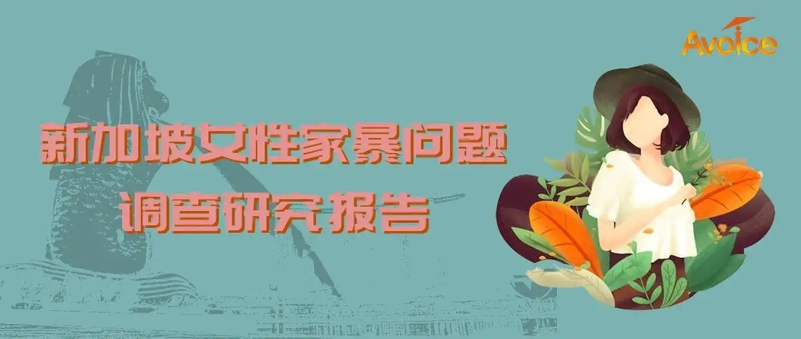
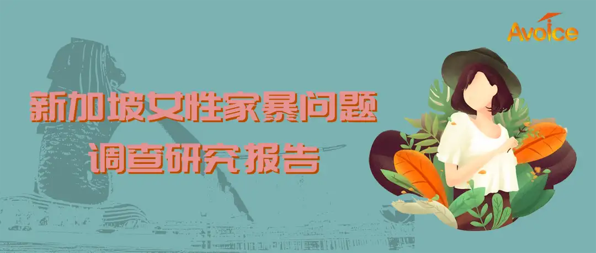
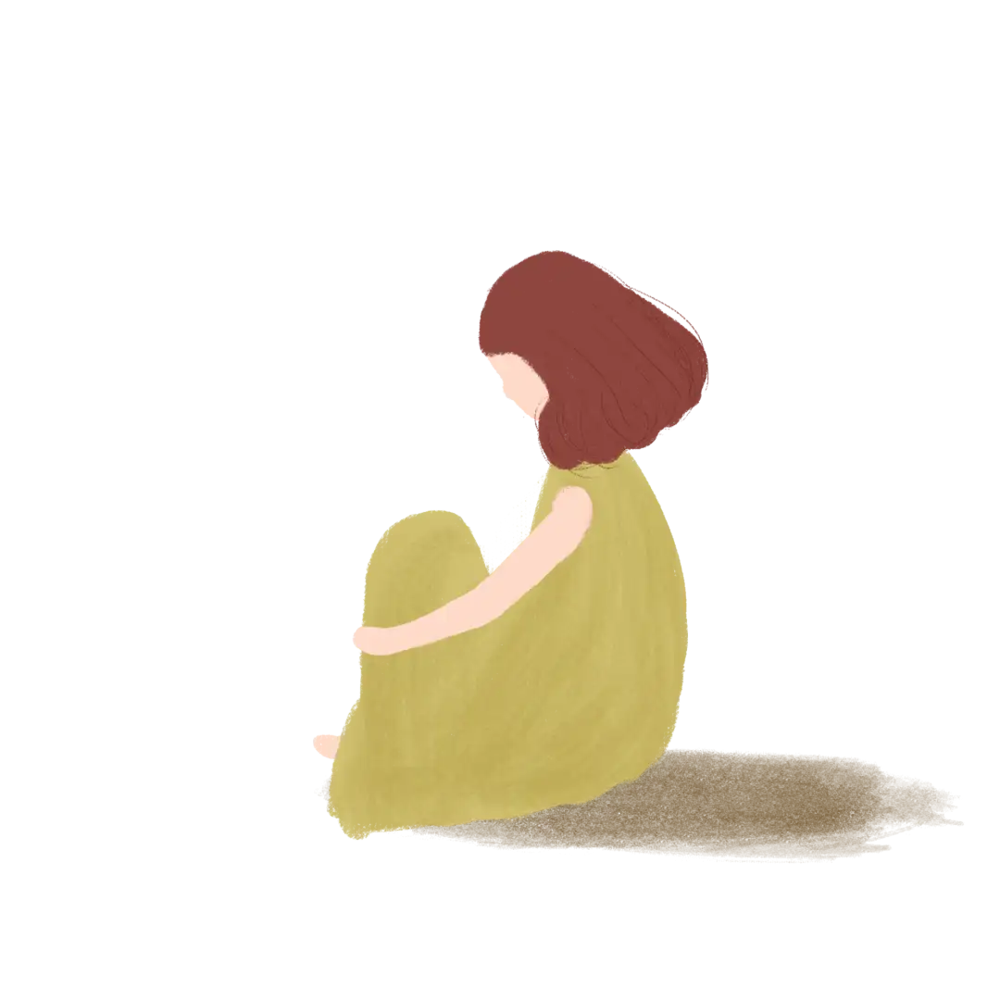
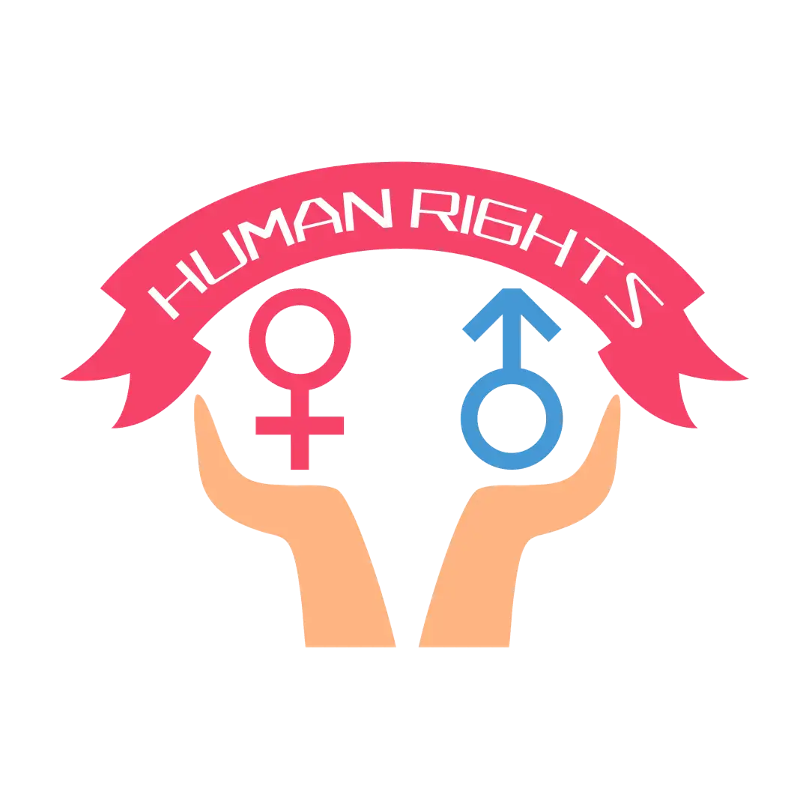

引言
根据联合国人文发展指数报告（Human Development Report）,在男女平等的评级项上，新加坡在155个参评国家或地区中名列第13名，位列亚洲国家第一。然而，男女平等并不意味着家庭暴力问题的杜绝。根据新加坡社会及家庭发展部统计，2012年至2016年，针对女性的家庭暴力占74%--76%，而同期针对男性的家庭暴力占24%—25%。
目录
一
新加坡女性家暴问题社会现状
（一）疫情下的家庭暴力
（二）移民潮对家暴的冲击
（三）家庭暴力问题的应对措施
二
新加坡家暴问题溯源分析
（一）新加坡家暴问题历史原因
（二）新加坡家暴问题社会原因
1、妇女权利与国家父权制关系
2、政治层面的发声无力
三
新加坡家暴问题求助途径
（一）报警求助
（二）家庭成员间家庭暴力
---申请人身安全保护令
（三）非家庭成员间的家庭暴力
（四）其他机构援助
1、妇女行动与研究协会
（AWARE Singapore）
2、新加坡女律师协会（SAWL）
四
参考文献
一、新加坡家暴问题社会现状
01
疫情下的家庭暴力
长期集中共处，经济压力等问题成为了疫情下引发家暴事件的导火索。2020年，新加坡警方报告了5,135起家庭暴力案件，其中1,115起被转至家庭暴力服务中心和保护中心，同2018年相比增加24%。内政国务部长对记者说，在2020年4月至12月期间，家庭暴力案件上升了10%,有关家暴问题的咨询则增加了将近六成 (Villar, 2020)。
此外，新加坡的一些社区服务中心还指出，遭遇家暴的外籍配偶因担心签证问题而不敢举报施暴者。特别是在疫情之下，居家隔离等防控措施使家暴受害者及其子女陷入求助无门——既无法寻求法律援助，也无法向身边的亲友倾诉的困境之中。

02
移民潮对家暴的冲击
据新加坡《联合早报》报道，过去两年，到新加坡PAVe防止家庭暴力中心寻求援助的新移民明显增加，从前年的30人增加至去年的55人，但只有约两成是自愿寻求援助。这85人来自14个国家，其中中国新移民人数最多，其次是印度、马来西亚和菲律宾。他们当中有13人目前已经是新加坡公民，56人是新加坡永久居民，其余16人持有长期社交访问准证。这些到PAVe寻求援助的新移民包括施暴者和受害者，受害者以女性为主，71名受害者中，只有一名男性；另有14名男性施暴者寻求辅导。
PAVe主要处理夫妻间的家暴案例，在2010年10月21日由新加坡国立大学亚洲社会发展中心与PAVe联办的首届家庭暴力研讨会上，PAVe资深社工林琼瑶和社工奥德丽以“破除障碍：了解受家庭暴力影响的本地新移民”为题，首次公布陷入家暴困境的新移民在寻求援助方面的行为和障碍。
PAVe平均每年接到250起新案子，几年前，在发现新移民个案有增加的趋势后，自2008年开始将新移民个案详细分类。新移民个案指的是夫妻一方或双方是新移民，但PAVe并没有再细分多少求助者是嫁到新加坡的外籍新娘。
受家暴影响的新移民人数增加，一方面因为新移民明显增加，另一方面可能因为他们对家庭暴力的认识越来越多。
根据2010年人口普查，新加坡公民有323万人，永久居民54万人，其余约131万是持工作准证、就业准证、长期社交访问准证及学生准证等在本地居住的非居民，而只有77.2%的新加坡公民和永久居民出生于新加坡。非本地出生居民当中，出生地是马来西亚者最多，其次来自中国大陆、香港和澳门，排名第三的则是来自印度、巴基斯坦、孟加拉和斯里兰卡的人。
03
家庭暴力问题的应对措施
针对新加坡国内的家庭暴力问题，新加坡采取了一系列应对政策，包括法律和社区支援。 在法律层面上，新加坡于1961年颁布了《妇女宪章》，为妇女维护自身合法权益提供了法律保障。此后，随着社会现状的不断发展，新加坡政府于1997年修订了《妇女宪章》，将家庭暴力问题纳入宪章并对家暴作出明确定义和处罚规定。 修正后的宪章规定，凡家庭成员对其他成员有蓄意伤害、蓄意或企图使他人产生可能受到伤害的恐惧、非法囚禁、骚扰他人等行为之一，就构成了家庭暴力。如丈夫对妻子施以拳脚，只要妻子提出控告，丈夫将被处以2000新元(1美元约合1.5新元)以下罚款或6个月以下监禁或二者兼施。如屡犯，被告将被处以5000新元以下罚款或12个月以下监禁或二者兼施。1995年，新加坡还成立了家庭法庭，以更好地处理家庭矛盾，并在必须情况下发出家庭特别保护令，禁止虐待妻子的丈夫进家门。在社会层面上，在新加坡政府与社区的共同推动下，新加坡成立了家庭暴力联网系统（National Family Violence Net-working System）。该系统能够协助政府与非政府组织合作，处理家庭暴力案件，并在社区内推动家庭暴力防范工作。此外，新加坡还针对施暴者与受害者分别制定了强制性的辅导计划，在发布个人保护令时开始实行(祝玉红&陈高凌,2014)。
新加坡现在每年发生约2000起家庭暴力事件，夫妻间暴力占家庭暴力案的90%。据新加坡近年进行的一项调查，也有越来越多的男性因家庭暴力向家庭和青少年司法中心申请个人保护令。在2004年该司法中心收到2522份保护令申请中，其中450份来自男性，占18%，而在1998年这一比例仅占8%。男性申请保护的目的各异，包括防止妻子动粗，防止被兄弟姐妹等家人殴打。在随机选取的1918起个案中，大部分与配偶有关，其中一半夫妻婚龄超过10年。在保护令申请者中，华人占多数，其中37%年龄在30岁至39岁之间。
新加坡社区发展、青年和体育部2010年10月21日宣布推出新修订的《反家庭暴力综合管理指南》。新加坡社区发展、青年和体育部部长维文在新加坡全国家庭暴力大会上致辞说，修订后的《指南》增设了社区法庭、学校和综合诊疗所等机构的新章节，确保各机构在处理家庭暴力事件时能更好地进行协调，为受害的家庭成员提供及时的保护和支援。
为配合政府相关措施，新加坡一些民间妇女组织积极行动起来，与政府或政府相关组织密切配合，将反对家庭暴力及保护妇女权益落到实处。除官方妇女组织外，新加坡还有民间妇女组织参与到家庭暴力问题的解决当中。如新加坡反对家庭暴力协会的目标就是避免、减少家庭暴力事件，鼓励为家庭暴力受害者提供直接服务。
二、新加坡家暴问题溯源分析
01
新加坡家暴问题历史原因
1965年新加坡独立后,面临着一系列社会和经济问题,尤其是粮食短缺问题。新加坡政府于1966年推出限制生育政策,在限制生育政策推行十年后的1977年,新加坡总和生育率迅速降到1.82,首次低于人口替代水平。之后，新加坡政府意识到生育政策需要调整,于1987年制定第一轮鼓励生育政策。年龄中位数的上升反映了育龄女性的总体年龄也在上升。一般认为20～35岁的育龄妇女是生育的主力军，随着育龄妇女规模的大幅度下降,一般生育率也会出现大幅度降低,形成负反馈。
Presser和Baldwin认为，由于儿童缺乏照料而无法工作的女性,其生育意愿也相对较低（Presser&Baldwin，1980），这往往引起家庭中男性主体的不满而造成家暴。同时，虽然女性的经济地位有所提高,但家务劳动和照料孩子主要由女性承担的传统家庭观念并未改变（STIER H,LEWIN-EPSTEIN N,2007）。缺乏性别公平视角的家庭友好政策,导致女性工作和家庭产生冲突同样也是家暴的潜在原因之一（MCDONALD P.Gender equity，2000）。 面对这些问题，推动社会性别平等的家庭友好政策被视为低生育率社会中能够兼顾经济发展和生育率提高的有效方式，制定强调性别平等的公共政策将有助于平衡女性工作和家庭冲突（ 计迎春&郑真真，2018）
02
新加坡家暴问题社会原因
1、妇女权利与国家父权制关系
父权制(Patriarchy)也称男权制，与男权、男权主义、男性主义、父权、家父长制等名词在学术定义上重叠，表达方式交互使用，是指男子在家庭、社会中的支配性特权。国家父权制则是以国家意识形态实施父权制，一方面体现于父权制的影响范围覆盖整个国家，另一方面体现于父权制的实施对象是国家主体。这意味着国家父权制具有范围广、强制性的特点，妇女无法通过个体力量进行社会角色的颠覆。目前，世界上的民族国家都属于国家父权制，新加坡的国家父权制对妇女权利变化的影响是家暴问题的主要社会原因。
新加坡作为典型的父权制国家，国家至上、家庭为根，妇女权利的变化也处于政府的掌控之下。 国家父权制确立了等级制权力结构，性别、阶级和种族共同构成这一结构的要素。在国家父权制下,“国家不仅难以平等地对待妇女,而且它还不同程度地构筑了男性与女性的关系。在许多方面，国家权力的使用是为了强化对妇女的控制（罗宾·科恩，2001）。”国家父权制将妇女角色从家庭、家族控制上升到国家掌控,与家庭( 私人) 父权制既有继承、也有区别：私人父权制的特征是家庭中父权关系的主宰地位，公共( 国家) 父权制则为雇佣和国家所宰制。前者的剥夺模式是个人的——是丈夫或父亲的剥夺; 后者的剥夺模式则是集体的，是许多男人的共同行为的结果。前者的主导策略可以归纳为排拒，即将妇女排拒于公共领域活动之外，从而限制在家庭之内; 后者的主导策略是隔离，允许妇女进入所有领域，但在领域内被隔离并处于从属地位（Sylvia Walby，2004）。”
从性别视角来看，新加坡国家父权制的“家庭为根”继承了家庭父权制，正如政府强调的“丈夫是家庭的支柱和核心,而妻子则是丈夫的辅助者”（孙小迎，1995）。因此新加坡政府对妇女的第一个定位就是 “贤妻良母”：照顾家庭、辅助丈夫。而 “国家至上” 又要求为国家奉献，所以对妇女的第二个定位是为国家经济增长作出贡献。现代和传统两方面的塑造下，新加坡妇既被要求承担照顾家庭、培养孩子的传统角色，也要参与国家经济发展。

2、政治层面的发声无力
妇女团建立是为动员女选民支持该党，而不是加强妇女参政权，女候选人始终悬于空位。面对1980年的记者提问，时任人民行动党竞选委员会主席的吴作栋回答：“你能不能找到一位女性，她拥有像男性一样的品质，和男人一样能干，她的丈夫或未婚夫或男朋友会同意她从事这样一份危险的职业(Jenny,1993) 。”在吴看来，女人只有像男人一样能干、得到丈夫或男友的同意才能从政。民主化浪潮的发展催生了要求增加女性议员的呼声,李显龙总理表示愿意推举更多女候选人，但又一再说, “吸纳女性融入政治会比男性更困难，加上她自己的事业和她作为妻子和母亲的责任，女性很难应对作为议会议员的要求(Wil Burghoorn et al, 2008)。”贤妻良母的角色定位阻碍了女性参与政治的机会 。
三、新加坡家暴问题求助途径
针对不同受害者的实际情况，新加坡法院（Singapore Court）的官方网站上提供了详细的求助途径与自我保护建议，值得其他国家学习借鉴。
01
报警求助
在经历家庭暴力时，最直接的办法是向警方求助，尤其是在以下几种危急情况下：
施暴者有家暴或故意伤害前科；
施暴者使用刀具等具有伤害性的器具进行家暴或威胁；
施暴者的言辞或举动变得越来越有攻击性。
除了向警方提供证词外，还可以提前准备以下内容：
①施暴者实施暴力行为的记录；
②其他家庭成员的证词；
③因家暴而受伤的照片或就医记录。
02
家庭成员间家庭暴力
---申请人身安全保护令
在向警方报案后，最常见的步骤是申请人身保护令（Personal Protection Oder)
受害者可以通过以下链接https://www.judiciary.gov.sg/family/how-to-file-personal-protection-order-application中提供的步骤，向当地的家庭服务中心（Family Protection Centre, FPC)申请人身安全保护令（personal protection order, PPO）、急速处理令（Expedited Order, EO)、家庭驱逐令（domestic exclusion order，DEO）、强制辅导令（Couselling Order）。PPO适用于所有新加坡公民，包括永久居民和在新加坡定居的个人。任何21岁以上的家庭暴力受害者均有资格申请PPO。如果受害者未满21岁，家庭成员、监护人或者社会与家庭部都有资格代替受害人申请PPO。
其中，人身安全保护令制止施暴者使用暴力，急速处理令提供申请即起效的开庭前紧急保护，家庭驱逐令禁止施暴者进入屋内及受害者周遭，强制辅导令强制施暴者及家庭接受辅导。如施暴者违反禁令，在人身安全保护令下达后，仍然继续实施家暴行为, 家暴行为会被记录在案。受害者可以通过报警追究施暴者的刑事责任，可罚至罚款2000元和/或监禁6个月，再犯者可罚至5000元和/或监禁12个月。申请过程无需律师，手续费仅需1元，为缺乏经济支撑的全职女性提供了实际的帮助。
03
非家庭成员间的家庭暴力
在特定情形下，一些非家庭成员之间也可能发生家庭暴力，例如家庭佣工和雇主之间或者未婚的情侣之间。在这种情况下，新加坡法律体系也能为受害者提供保护，但并非是通过申请人身安全保护令（PPO），而是向裁判官提出申诉（ filing a Magistrate’s Complaint）。如果不确定是否适合投诉程序，也可以进行案前评估。在进行申诉前，你需要准备的文件如下：
①身份证或护照；
②出警报告或报告编码；
③相关文件，如医疗报告或反应家暴事实的信息截图等。
04
其他机构援助
1、妇女行动与研究协会（AWARE Singapore）
AWARE是新加坡重要的妇女权益及性别平等组织。受害者可在工作日10点至18点拨打1800-777-5555热线预约AWARE的咨询与法律援助服务。
2、新加坡女律师协会（SAWL）
新加坡女律师协会为家暴受害女性提供无偿法律顾问服务，受害者可以通过致电 (+65) 6837 0611进行咨询，了解是否符合接受免费法律服务的条件。
四、参考文献
提取码：AVOI
(百度网盘链接:
https://pan.baidu.com/s/1oLIgq99fwjGTbZpUTVYDFQ?pwd=AVOI)
↑扫描二维码↑或者点击文章结尾“阅读原文”
即可获取报告PDF版本资料
作者 | 方唐多多 郭若菲 胡娜
报告排版 | 陈瑶 官晓娜
推文排版 | 陈佩瑾 Kristina
图片 | Pngtree